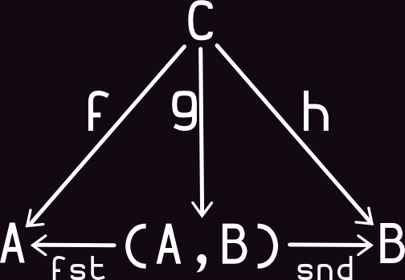
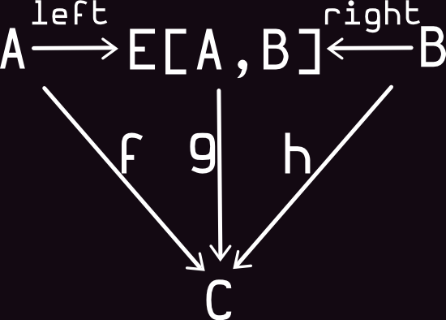

Functional programming with arrows
by Yuriy Polyulya @ Workday
Baseline & Goals:
The most imaportant ideas in modern functional programming are:
-
It's all about data
functional programming is all about putting data first. The firts is defining what kinds of data we have in a problem domain, and what kinds of transformations we want on them. Then we building up the data structures and the code to do the transformations.
-
Managing of side-effect
functional programming is not about pure functions any more. Eventually, programs will produce side-effects and side-effect management is a puzzle with many parts.
"to show one of technics of managing your data & control side-effect"
- Function and Combinators
* Product & CoProduct Type
- Arrows and Applicatives
- Arrows and Monads
- Arrows and Transducers
Function and Combinators
Theory:


Abstraction:

Code:
val f: String => Int = str => str.length
f("Hello") // => 5
f("By!") // => 3
Definition:

Code:
val f: String => Int = str => str.length
val g: Int => Int = i => i * 2
val h = g compose h // f >>> h
h("Hello") // => 10
h("By!") // => 6
Data-Type: Product
the structure of a product type is determined by the fixed order of the operands in the product. The product of type1, ..., typen is written type1 * ... * typen in ML and (type1,...,typen).
Definition:
Code:
val f: String => Int = str => str.length
val g: Int => Int = i => i * 2
Data-Type: Co-Product
very similar to the Either data type; the only difference is that it does not combine two base types, but two type constructors.
Definition:
Code:
val f: String => Int = str => str.length
val g: Int => Int = i => i * 2
Function and Combinators
Definition:

Code:
val f: String => Int = str => str.length
val g: String => String = str => str * 2
val h = g &&& h
h("Hello") // => (5, "HelloHello")
h("By!") // => (6, "By!By!")
Arrows with Product & CoProduct
Arrows & Applicatives
Arrow = Category + Applicative?
Arrows & Monads
Kleisli & CoKleisli Arrow
Generalising monads to arrows
What can Arrows do that Monads can't?
Arrows for Errors: extending the error (Try) monad
Arrow based stream transducers
Arrows in Domain Modeling (Kleisli Arrow)
Summary
Questions?
Remarks?